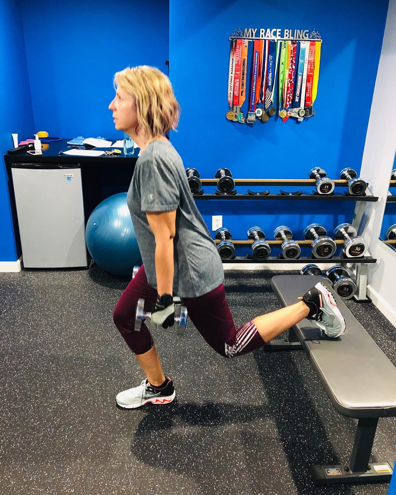

Custom workouts
Strength sessions designed around your goal, fitness level, available time, and equipment.
You don't need more random workouts. You need to know what to do, why it matters, and what the backup plan is when Wednesday changes everything. Kelsey builds your training around your goals, experience, equipment, and schedule.
Online training works well when you want expert programming and accountability without arranging your life around a trainer's appointment book.
Your program lives in an easy-to-use app, but the relationship is still personal. Kelsey reviews your week and adjusts the work based on what is actually happening.
Strength sessions designed around your goal, fitness level, available time, and equipment.
Ask questions, share a hard week, and get form or programming guidance without waiting for the next month.
Progress, energy, pain, schedule, and confidence all help shape what happens next.

Kelsey Holden has coached since 2011, opened fitness studios in Ann Arbor and Dayton, holds a B.S. in Exercise Science and a master's in Orthotics and Prosthetics, and is an NPTI-certified personal trainer and AFAA group fitness instructor.
She's also a mom of two. The plan will be evidence-informed, but it will never assume you live in a laboratory.
Meet Kelsey →No. Kelsey can build your workouts around a full gym, a few dumbbells, resistance bands, or a simple home setup.
Yes. Exercises, volume, and progression are chosen for your current ability. You do not need to get in shape before starting.
Yes. One-to-one fitness coaching is delivered online, so clients can participate throughout the United States. Metro Detroit is Kelsey's home base.
The combined Training + Nutrition plan puts both areas into one connected coaching relationship.
No perfect week required
Book a free 20-minute conversation about your goals, schedule, and what has made other plans hard to keep.
Request a free call →